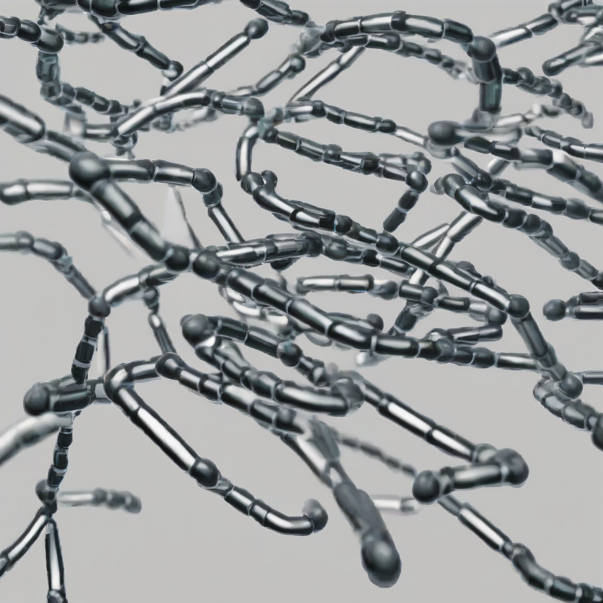

-
"Solar Surge: New Study Reveals Stunning Increase in Global Renewable Energy Production"
This article is AI generated!
Solar Surge: New Study Reveals Stunning Increase in Global Renewable Energy Production
Read more... -
"Electric Exit: EA Confirms That Star Wars Jedi: Fallen Order Will Not Receive Multiplayer Updates"
This article is AI generated!
Electric Exit: EA Confirms That Star Wars Jedi: Fallen Order Will Not Receive Multiplayer Updates
Read more... -
"Breakthrough in CRISPR Technology Allows for Greater Precision in Gene Editing Applications"
This article is AI generated!

Breakthrough in CRISPR Technology Allows for Greater Precision in Gene Editing Applications
Read more... -
"New Horizons for Human Settlement: NASA Announces Breakthrough in Terraforming Technology"
This article is AI generated!
According to NASA officials, the new technology is designed to alter the atmospheric composition of a planetary body, making it more conducive to human life. The system uses a combination of advanced atmospheric processors and nanotechnology to break down harmful gases, such as carbon dioxide …
Read more...